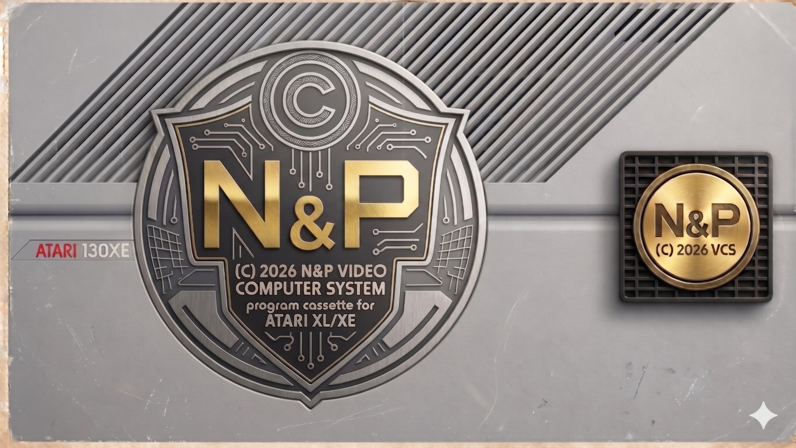
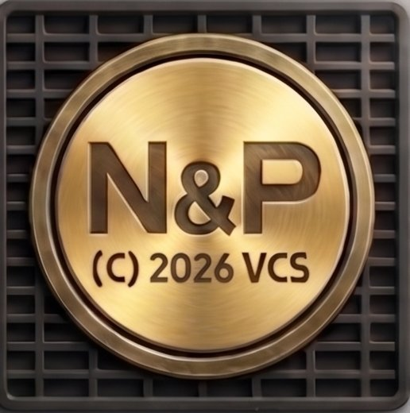

Vitejte na atarihelp.eu!
Jsme N&P Studio a vracime zivot legendarnimu Atari 130XE. Pamatujete na to piskani magnetofonu a modrou obrazovku? My ano! Tato stranka vznikla proto, abychom se podelili o nase zkusenosti s propojovanim Atari s modernim PC, nahravanim her z WAVu a tvorbou vlastnich zavadecu.
Co tu najdete? Podrobne navody pro zacatecniky i pokrocile, nase vlastni programy (Tetris Platinum, N&P Loader) a archiv her a utilit pro ceskou Atari scenu.
Atari zdar!